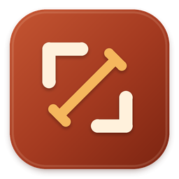
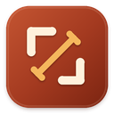
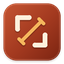

Jostle / Production artwork / Tension
A window held under tension.
Opposing cream brackets establish the frame. A warm gold diagonal pulls across it, with perpendicular grips at each end to suggest force rather than a generic four-way movement control.
App icon reduction



#A43A20#FFF1DC#F5B75D
Each raster slot is rendered independently with optical minimum stroke weights at 16 and 32 pixels. Transparent outer corners, restrained depth, and a quiet inset highlight provide the native macOS finish.
Template menu icon
The asset contains only black plus alpha. AppKit applies menu-bar appearance and highlight color through explicit template rendering.